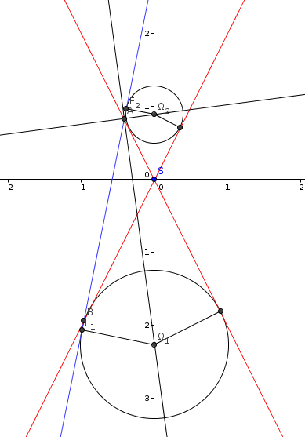

| Choisissez votre langue ! | Choose your language ! |
On considère le cône C d'équation x²+y²-k²z²=0 et le plan P d'équation z=px+q avec q≠0.
On suppose p < -1/k ou p > +1/k (cas de l'hyperbole).
Au moyen d'un logiciel spécialisé (par exemple GeoGebra) faire un dessin représentant la coupe de la figure par le plan y=0.
En déduire les coordonnées des centres des sphères de Dandelin.
Les rayons des sphères de Dandelin.
Les coordonnées des points de contact de P avec les sphères de Dandelin.
aide

solution
Voir la figure donnée dans l'aide
Le raisonnement est analogue à celui de l'exercice 04. Soit Ω(0,0,γ), un centre d'une sphère de Dandelin.On a d(Ω,C)=d(Ω,Δ) où Δ est la droite d'équation z=kx.
Donc \( \displaystyle d(\Omega,C) = \frac{\mid {k\gamma} \mid}{\sqrt{1 + k^{2}}} \)
On a également d(Ω,P)=d(Ω,D) où D est la droite z=px+q.
Donc \( \displaystyle d(\Omega,P) = \frac{\mid \gamma - q \mid}{\sqrt{1 + p^{2}}} \)
Les cotes γ1, γ2 des centres des sphères de Dandelin sont donc solutions de l'équation d(Ω,C)=d(Ω,P).
On trouve :
\( \displaystyle \gamma_{1} = \frac{- q\sqrt{1 + k^{2}}}{k\sqrt{1 + p^{2}} - \sqrt{1 + k^{2}}} \)
\( \displaystyle \gamma_{2} = \frac{q\sqrt{1 + k^{2}}}{k\sqrt{1 + p^{2}} + \sqrt{1 + k^{2}}} \)
On peut supposer que k est positif.Si R1 est le rayon de la sphère de Dandelin de centre Ω1 et si θ est l'angle que fait la droite Δ avec l'axe Oz on a
\( \displaystyle \frac{R_{1}}{\mid \gamma_{1} \mid} = \sin(\theta) \) et également
tan(θ)=k
De là nous tirons en exprimant le sinus en fonction de la tangente :
\( \displaystyle R_{1} = \gamma_{1} \times \sqrt{\left( \frac{k}{1 + k} \right)} \)
et une formule identique pour R2.F1(x1,0,z1) est la projection orthogonale de Ω1(0,0,γ1) sur D.
Il en résulte que x1 et z1 sont solutions du système :
\( \displaystyle \left\{ \begin{matrix} {z_{1} = px_{1} + q} \\ {p\left( z_{1} - \gamma_{1} \right) + x_{1} = 0} \\ \end{matrix} \right. \)
soit\( \displaystyle \left\{ \begin{matrix} {x_{1} = \frac{p\gamma_{1} - {pq}}{1 + p^{2}}} \\ {z_{1} = \frac{p^{2}\gamma_{1} + q}{1 + p^{2}}} \\ \end{matrix} \right. \)
et des formules analogues pour F2.We consider the cone C with equation x²+y²-k²z²=0 and the plane P with equation z=px+q with q≠0.
We assume p < -1/k or p > +1/k (case of hyperbola).
By means of specialized software (for example GeoGebra) make a drawing representing the section of the figure by the plane y=0.
Deduce the coordinates of the centers of the Dandelin spheres.
The radii of the Dandelin spheres.
The coordinates of the contact points of P with the Dandelin spheres.
hint
solution
See the figure given in the help
The reasoning is analogous to that of exercise 04. Let Ω(0,0,γ), be a center of a Dandelin sphere.We have d(Ω,C)=d(Ω,Δ) where Δ is the line with equation z=kx.
SO \( \displaystyle d(\Omega,C) = \frac{\mid {k\gamma} \mid}{\sqrt{1 + k^{2}}} \)
We also have d(Ω,P)=d(Ω,D) where D is the line z=px+q.
SO \( \displaystyle d(\Omega,P) = \frac{\mid \gamma - q \mid}{\sqrt{1 + p^{2}}} \)
The coordinates γ1, γ2 of the centers of the Dandelin spheres are therefore solutions of the equation d(Ω,C)=d(Ω,P ).
We find :
\( \displaystyle \gamma_{1} = \frac{- q\sqrt{1 + k^{2}}}{k\sqrt{1 + p^{2}} - \sqrt{1 + k^{2}} } \)
\( \displaystyle \gamma_{2} = \frac{q\sqrt{1 + k^{2}}}{k\sqrt{1 + p^{2}} + \sqrt{1 + k^{2}}} \)
We can assume that k is positive.If R1 is the radius of the Dandelin sphere with center Ω1 and if θ is the angle between the line Δ with the Oz axis we have
\( \displaystyle \frac{R_{1}}{\mid \gamma_{1} \mid} = \sin(\theta) \) and also
tan(θ)=k
From there we derive by expressing the sine as a function of the tangent:
\( \displaystyle R_{1} = \gamma_{1} \times \sqrt{\left( \frac{k}{1 + k} \right)} \)
and an identical formula for R2.F1(x1,0,z1) is the orthogonal projection of Ω1(0, 0,γ1) on D.
It follows that x1 and z1 are solutions of the system:
\( \displaystyle \left\{ \begin{matrix} {z_{1} = px_{1} + q} \\ {p\left( z_{1} - \gamma_{1} \right) + x_{1} = 0} \\ \end{matrix} \right. \)
or\( \displaystyle \left\{ \begin{matrix} {x_{1} = \frac{p\gamma_{1} - {pq}}{1 + p^{2}}} \\ {z_{1} = \frac{p^{2}\gamma_{1} + q}{1 + p^{2}}} \\ \end{matrix} \right. \)
and analogous formulas for F2.|
Création Gilles Dubois - licence CC-BY-SA
Created by Gilles Dubois - licence CC-BY-SA
|
Septembre 2023
September 2023
|
Version mobile Jquery
Mobile Jquery version
|
|